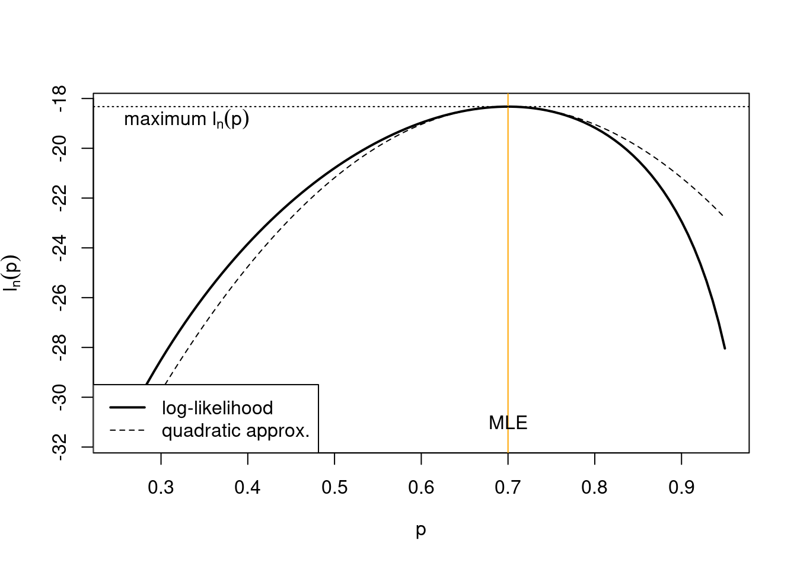

4 Quadratic approximation and normal asymptotics
4.1 Multivariate statistics for random vectors
4.1.1 Covariance and correlation
Assume a random variable \(x\) with mean \(\text{E}(x) = \mu\). The corresponding variance is given by \[ \begin{split} \text{Var}(x) & = \text{E}\left((x-\mu)^2 \right) \\ & =\text{E}\left( (x-\mu)(x-\mu) \right) \\ & = \text{E}(x^2)-\mu^2 \\ \end{split} \]
For a random vector \(\boldsymbol x= (x_1, x_2,...,x_d)^T\) the mean \(\text{E}(\boldsymbol x) = \boldsymbol \mu\) is simply comprised of the means of its components, i.e. \(\boldsymbol \mu= (\mu_1, \ldots, \mu_d)^T\). Thus, the mean of a random vector of dimension is a vector of of the same length.
The variance of a random vector of length \(d\), however, is not a vector but a matrix of size \(d\times d\). This matrix is called the covariance matrix: \[ \begin{split} \text{Var}(\boldsymbol x) &= \underbrace{\boldsymbol \Sigma}_{d\times d} = (\sigma_{ij}) = \begin{pmatrix} \sigma_{11} & \dots & \sigma_{1d}\\ \vdots & \ddots & \vdots \\ \sigma_{d1} & \dots & \sigma_{dd} \end{pmatrix} \\ &=\text{E}\left(\underbrace{(\boldsymbol x-\boldsymbol \mu)}_{d\times 1} \underbrace{(\boldsymbol x-\boldsymbol \mu)^T}_{1\times d}\right) \\ & = \text{E}(\boldsymbol x\boldsymbol x^T)-\boldsymbol \mu\boldsymbol \mu^T \\ \end{split} \] The entries of the covariance matrix \(\sigma_{ij} =\text{Cov}(x_i, x_j)\) describe the covariance between the random variables \(x_i\) and \(x_j\). The covariance matrix is symmetric, hence \(\sigma_{ij}=\sigma_{ji}\). The diagonal entries \(\sigma_{ii} = \text{Cov}(x_i, x_i) = \text{Var}(x_i) = \sigma_i^2\) correspond to the variances of the components of \(\boldsymbol x\). The covariance matrix is positive semi-definite, i.e. the eigenvalues of \(\boldsymbol \Sigma\) are all positive or equal to zero. However, in practise one aims to use non-singular covariance matrices, with all eigenvalues positive, so that they are invertible.
A covariance matrix can be factorised into the product \[\boldsymbol \Sigma= \boldsymbol V^{\frac{1}{2}} \boldsymbol P\boldsymbol V^{\frac{1}{2}}\] where \(\boldsymbol V\) is a diagonal matrix containing the variances \[ \boldsymbol V= \begin{pmatrix} \sigma_{11} & \dots & 0\\ \vdots & \ddots & \vdots \\ 0 & \dots & \sigma_{dd} \end{pmatrix}\] and the matrix \(\boldsymbol P\) (“capital rho”) is the symmetric correlation matrix \[ \boldsymbol P= (\rho_{ij}) = \begin{pmatrix} 1 & \dots & \rho_{1d}\\ \vdots & \ddots & \vdots \\ \rho_{d1} & \dots & 1 \end{pmatrix} = \boldsymbol V^{-\frac{1}{2}} \boldsymbol \Sigma\boldsymbol V^{-\frac{1}{2}}\] Thus, the correlation between \(x_i\) and \(x_j\) is defined as \[\rho_{ij} = \text{Cor}(x_i,x_j) = \frac{\sigma_{ij}}{\sqrt{\sigma_{ii}\sigma_{jj}}}\]
4.1.2 Multivariate normal distribution
The density of a normally distributed scalar variable \(x \sim N(\mu, \sigma^2)\) with mean \(\text{E}(x) = \mu\) and variance \(\text{Var}(x) = \sigma^2\) is \[ f(x |\mu, \sigma^2) = \frac{1}{\sqrt{2\pi\sigma^2}} \exp\left( -\frac{(x-\mu)^2}{2\sigma^2} \right) \]
The univariate normal distribution for a scalar \(x\) generalises to the* *multivariate normal distribution** for a vector \(\boldsymbol x= (x_1, x_2,...,x_d)^T \sim N_d(\boldsymbol \mu, \boldsymbol \Sigma)\) with with mean \(\text{E}(\boldsymbol x) = \boldsymbol \mu\) and covariance matrix \(\text{Var}(\boldsymbol x) = \boldsymbol \Sigma\). The corresponding density is \[f(\boldsymbol x| \boldsymbol \mu, \boldsymbol \Sigma) = (2\pi)^{-\frac{d}{2}} \det(\boldsymbol \Sigma)^{-\frac{1}{2}} \exp\left({{-\frac{1}{2}} \underbrace{\underbrace{(\boldsymbol x-\boldsymbol \mu)^T}_{1 \times d} \underbrace{\boldsymbol \Sigma^{-1}}_{d \times d} \underbrace{(\boldsymbol x-\boldsymbol \mu)}_{d \times 1} }_{1 \times 1 = \text{scalar!}}}\right)\]
For \(d=1\) we have \(bx=x\), \(\boldsymbol \mu= \mu\) and \(\boldsymbol \Sigma= \sigma^2\) so that the multivariate normal density reduces to the univariate normal density.
Example 4.1 Maximum likelihood estimates of the parameters of the multivariate normal distribution:
Maximising the log-likelihood based on the multivariate normal density yields the MLEs for \(\boldsymbol \mu\) and \(\boldsymbol \Sigma\). These are generalisations of the MLEs for the mean \(\mu\) and variance \(\sigma^2\) of the univariate normal as encountered in Example 3.4.
The estimates can be written in three different ways:
a) data vector notation
with \(\boldsymbol x_1,\ldots, \boldsymbol x_n\) the \(n\) vector-valued observations from the multivariate normal:
MLE for the mean: \[ \hat{\boldsymbol \mu}_{ML} = \frac{1}{n}\sum^{n}_{k=1} \boldsymbol x_k = \bar{\boldsymbol x} \]
MLE for the covariance: \[\underbrace{\widehat{\boldsymbol \Sigma}_{ML}}_{d \times d} = \frac{1}{n}\sum^{n}_{k=1} \underbrace{\left(\boldsymbol x_k-\bar{\boldsymbol x}\right)}_{d \times 1} \; \underbrace{\left(\boldsymbol x_k-\bar{\boldsymbol x}\right)^T}_{1 \times d}\] Note the factor \(\frac{1}{n}\) in the estimator of the covariance matrix.
With \(\overline{\boldsymbol x\boldsymbol x^T} = \frac{1}{n}\sum^{n}_{k=1} \boldsymbol x_k \boldsymbol x_k^T\) we can also write \[ \widehat{\boldsymbol \Sigma}_{ML} = \overline{\boldsymbol x\boldsymbol x^T} - \bar{\boldsymbol x} \bar{\boldsymbol x}^T \]
b) data component notation
with \(x_{ki}\) the \(i\)-th component of the \(k\)-th sample \(\boldsymbol x_k\):
\[\hat{\mu}_i = \frac{1}{n}\sum^{n}_{k=1} x_{ki} \text{ with } \hat{\boldsymbol \mu}=\begin{pmatrix} \hat{\mu}_{1} \\ \vdots \\ \hat{\mu}_{d} \end{pmatrix}\]
\[\hat{\sigma}_{ij} = \frac{1}{n}\sum^{n}_{k=1} \left(x_{ki}-\hat{\mu}_i\right) (\ x_{kj}-\hat{\mu}_j) \text{ with } \widehat{\boldsymbol \Sigma} = (\hat{\sigma}_{ij}) \]
c) data matrix notation
with \(\boldsymbol X= \begin{pmatrix} \boldsymbol x_1^T \\ ... \\ \boldsymbol x_n^T \\\end{pmatrix}\) as a data matrix containing the samples in its rows. Note that this is the statistics convention — in much of the engineering and computer science literature the data matrix is often transposed and samples are stored in the columns. Thus, the formulas below are only correct assuming the statistics convention.
\[ \hat{\boldsymbol \mu} = \frac{1}{n} \boldsymbol X^T \boldsymbol 1_n \] Here \(\boldsymbol 1_n\) is a vector of length \(n\) containing 1 at each component.
\[ \hat{\boldsymbol \Sigma} = \frac{1}{n} \boldsymbol X^T \boldsymbol X- \hat{\boldsymbol \mu} \hat{\boldsymbol \mu}^T \] To simplify the expression for the estimate of the covariance matrix one often assumes that the data matrix is centered, i.e. that \(\hat{\boldsymbol \mu} = 0\).
Because of the ambiguity in convention (machine learning vs statistics convention) and the often implicit use of centered data matrices the matrix notation is often confusing. Hence, using the other two notations is generally preferable.
4.2 Approximate distribution of maximum likelihood estimates
4.2.1 Quadratic log-likelihood resulting from normal model
Assume we observe a single sample \(\boldsymbol x\sim N(\boldsymbol \mu, \boldsymbol \Sigma^2)\) with known covariance. The corresponding log-likelihood for \(\boldsymbol \mu\) is \[ l_1(\boldsymbol \mu) = C - \frac{1}{2}(\boldsymbol x-\boldsymbol \mu)^T \boldsymbol \Sigma^{-1} (\boldsymbol x-\boldsymbol \mu) \] where \(C\) is a constant that does not depend on \(\boldsymbol \mu\). Note that the log-likelihood is exactly quadratic and the maximum lies at \((\boldsymbol x, C)\).
4.2.2 Quadratic approximation of a log-likelihood function
Now consider the quadratic approximation of the log-likelihood function \(l_n(\boldsymbol \theta)\) for a general model around the MLE \(\hat{\boldsymbol \theta}_{ML}\).

We assume the model is regular with \(\nabla l_n(\hat{\boldsymbol \theta}_{ML} ) = 0\). The Taylor series approximation of scalar-valued function \(f(\boldsymbol x)\) around \(\boldsymbol x_0\) is \[ f(\boldsymbol x) = f(\boldsymbol x_0) + \nabla f(\boldsymbol x_0) (\boldsymbol x-\boldsymbol x_0) + \frac{1}{2} (\boldsymbol x-\boldsymbol x_0)^T \nabla^T \nabla f(\boldsymbol x_0) (\boldsymbol x-\boldsymbol x_0) + \ldots \] Applied to the log-likelihood function this yields
\[l_n(\boldsymbol \theta) \approx l_n(\hat{\boldsymbol \theta}_{ML})- \frac{1}{2}(\hat{\boldsymbol \theta}_{ML}- \boldsymbol \theta)^T J_n(\hat{\boldsymbol \theta}_{ML})(\hat{\boldsymbol \theta}_{ML}-\boldsymbol \theta)\]
This is a quadratic function with maximum at \(( \hat{\boldsymbol \theta}_{ML} , l_n(\hat{\boldsymbol \theta}_{ML})\). Note the natural appearance of the observed Fisher information \(J_n(\hat{\boldsymbol \theta}_{ML})\) in the quadratic term. There is no linear term because of the vanishing gradient at the MLE.
Crucially, we realise that the approximation has the same form as if \(\hat{\boldsymbol \theta}_{ML}\) was a sample from a multivariate normal distribution with mean \(\boldsymbol \theta\) and with covariance given by the inverse observed Fisher information! Note that this requires a positive definite observed Fisher information matrix so that \(J_n(\hat{\boldsymbol \theta}_{ML})\) is actually invertible!
Example 4.2 Quadratic approximation of the log-likelihood for a proportion:
From Example 3.1 we have the log-likelihood \[ l_n(p) = n \left( \bar{x} \log p + (1-\bar{x}) \log(1-p) \right) \] and the MLE \[ \hat{p}_{ML} = \bar{x} \] and from Example 3.5 the observed Fisher information \[ \begin{split} J_n(\hat{p}_{ML}) = \frac{n}{\bar{x} (1-\bar{x})} \end{split} \] The log-likelihood at the MLE is \[ l_n(\hat{p}_{ML}) = n \left( \bar{x} \log \bar{x} + (1-\bar{x}) \log(1-\bar{x}) \right) \] This allows us to construct the quadratic approximation of the log-likelihood around the MLE as \[ \begin{split} l_n(p) & \approx l_n(\hat{p}_{ML}) - \frac{1}{2} J_n(\hat{p}_{ML}) (p-\hat{p}_{ML})^2 \\ &= n \left( \bar{x} \log \bar{x} + (1-\bar{x}) \log(1-\bar{x}) - \frac{(p-\bar{x})^2}{2 \bar{x} (1-\bar{x})} \right) \\ &= C + \frac{ \bar{x} p -\frac{1}{2} p^2}{ \bar{x} (1-\bar{x})/n} \\ \end{split} \] The constant \(C\) does not depend on \(p\), its only purpose is to match the approximate log-likelihood at the MLE with that of the corresponding original log-likelihood. The approximate log-likelihood takes on the form of a normal log-likelihood (Example 3.3) for one observation of \(\hat{p}_{ML}=\bar{x}\) from \(N\left(p, \frac{\bar{x} (1-\bar{x})}{n} \right)\).
The following figure shows the above log-likelihood function and its quadratic approximation for example data with \(n = 30\) and \(\bar{x} = 0.7\):

4.2.3 Asymptotic normality of maximum likelihood estimates
Intuitively, it makes sense to associate large amount of curvature of the log-likelihood at the MLE with low variance of the MLE (and conversely, low amount of curvature with high variance).
From the above we see that
- normality implies a quadratic log-likelihood,
- conversely, taking an quadratic approximation of the log-likelihood implies approximate normality, and
- in the quadratic approximation the inverse observed Fisher information plays the role of the covariance of the MLE.
This suggests the following theorem: Asymptotically, the MLE is normally distributed around the true parameter and with covariance equal to the inverse of the observed Fisher information:
\[\hat{\boldsymbol \theta}_{ML} \overset{a}{\sim}\underbrace{N_d}_{\text{multivariate normal}}\left(\underbrace{\boldsymbol \theta}_{\text{mean vector}},\underbrace{\boldsymbol J_n(\hat{\boldsymbol \theta}_{ML})^{-1}}_{\text{ covariance matrix}}\right)\]
This theorem about the distributional properties of MLEs greatly enhances the usefulness of the method of maximum likelihood. It implies that in regular settings maximum likelihood is not just a method for obtaining point estimates but also also provides estimates of their uncertainty.
However, we need to clarify what “asymptotic” actually means in the context of the above theorem:
Primarily, it means to have suffient sample size so that the log-likelihood \(l_n(\boldsymbol \theta)\) is sufficiently well approximated by a quadratic function around \(\hat{\boldsymbol \theta}_{ML}\). The better the local quadratic approximation the better the normal approximation!
In a regular model with positive definite observed Fisher information matrix this is guaranteed for large sample size \(n \rightarrow \infty\) thanks to the central limit theorem).
However, \(n\) going to infinity is in fact not always required for the normal approximation to hold! Depending on the particular model a good local fit to a quadratic log-likelihood may be available also for finite \(n\). As a trivial example, for the normal log-likelihood it is valid for any \(n\).
In the other hand, in non-regular models (with nondifferentiable log-likelihood at the MLE and/or a singular Fisher information matrix) no amount of data, not even \(n\rightarrow \infty\), will make the quadratic approximation work.
Remarks:
The technical details of the above considerations are worked out in the theory of locally asymptotically normal (LAN) models pioneered in 1960 by Lucien LeCam (1924–2000).
There are also methods to obtain higher-order (higher than quadratic and thus non-normal) asymptotic approximations. These relate to so-called saddle point approximations.
4.2.4 Asymptotic optimal efficiency
Assume now that \(\hat{\boldsymbol \theta}\) is an arbitrary and unbiased estimator for \(\boldsymbol \theta\) and the underlying data generating model is regular with density \(f(\boldsymbol x| \boldsymbol \theta)\).
H. Cramér (1893–1985), C. R. Rao (1920–) and others demonstrated in 1945 the so-called information inequality, \[ \text{Var}(\hat{\boldsymbol \theta}) \geq \frac{1}{n} \boldsymbol I^{\text{Fisher}}(\boldsymbol \theta)^{-1} \] which puts a lower bound on the variance of an estimator for \(\boldsymbol \theta\). (Note for \(d>1\) this is a matrix inequality, meaning that the difference matrix is positive semidefinite).
For large sample size with \(n \rightarrow \infty\) and \(\hat{\boldsymbol \theta}_{ML} \rightarrow \boldsymbol \theta\) the observed Fisher information becomes \(J_n(\hat{\boldsymbol \theta}) \rightarrow n \boldsymbol I^{\text{Fisher}}(\boldsymbol \theta)\) and therefore we can write the asymptotic distribution of \(\hat{\boldsymbol \theta}_{ML}\) as \[ \hat{\boldsymbol \theta}_{ML} \overset{a}{\sim} N_d\left( \boldsymbol \theta, \frac{1}{n} \boldsymbol I^{\text{Fisher}}(\boldsymbol \theta)^{-1} \right) \] This means that for large \(n\) in regular models \(\hat{\boldsymbol \theta}_{ML}\) achieves the lowest variance possible according to the Cramér-Rao information inequality. In other words, for large sample size maximum likelihood is optimally efficient and thus the best available estimator will in fact be the MLE!
However, as we will see later this does not hold for small sample size where it is indeed possible (and necessary) to improve over the MLE (e.g. via Bayesian estimation or regularisation).
4.3 Quantifying the uncertainty of maximum likelihood estimates
4.3.1 Estimating the variance of MLEs
In the previous section we saw that MLEs are asymptotically normally distributed, with the inverse Fisher information (both expected and observed) linked to the asymptotic variance.
This leads to the question whether to use the observed Fisher information \(J_n(\hat{\boldsymbol \theta}_{ML})\) or the expected Fisher information at the MLE \(n \boldsymbol I^{\text{Fisher}}( \hat{\boldsymbol \theta}_{ML} )\) to estimate the variance of the MLE?
- Clearly, for \(n\rightarrow \infty\) both can be used interchangeably.
- However, they can be very different for finite \(n\) in particular for models outside the exponential family.
- Also normality may occur well before \(n\) goes to \(\infty\).
Therefore one needs to choose between the two, considering also that
- the expected Fisher information at the MLE is the average curvature at the MLE, whereas the observed Fisher information is the actual observed curvature, and
- the observed Fisher information naturally occurs in the quadratic approximation of the log-likelihood.
All in all, the observed Fisher information as estimator of the variance is more appropriate as it is based on the actual observed data and also works for large \(n\) (in which case it yields the same result as using expected Fisher information): \[ \widehat{\text{Var}}(\hat{\boldsymbol \theta}_{ML}) = \boldsymbol J_n(\hat{\boldsymbol \theta}_{ML})^{-1} \] and its square-root as the estimate of the standard deviation \[ \widehat{\text{SD}}(\hat{\boldsymbol \theta}_{ML}) = \boldsymbol J_n(\hat{\boldsymbol \theta}_{ML})^{-1/2} \] Note that in the above we use matrix inversion and the (inverse) matrix square root.
The reasons for preferring observed Fisher information are made mathematically precise in a classic paper by Efron and Hinkley (1978).
Example 4.3 Estimated variance and distribution of the MLE of a proportion:
From Examples 3.1 and 3.5 we know the MLE \[ \hat{p}_{ML} = \bar{x} = \frac{k}{n} \] and the corresponding observed Fisher information \[ J_n(\hat{p}_{ML})=\frac{n}{\hat{p}_{ML}(1-\hat{p}_{ML})} \] The estimated variance of the MLE is therefore \[ \widehat{\text{Var}}( \hat{p}_{ML} ) = \frac{\hat{p}_{ML}(1-\hat{p}_{ML})}{n} \] and the corresponding asymptotic normal distribution is \[ \hat{p}_{ML} \overset{a}{\sim} N\left(p, \frac{\hat{p}_{ML}(1-\hat{p}_{ML})}{n} \right) \]
Example 4.4 Estimated variance and distribution of the MLE of the mean parameter for the normal distribution with known variance:
From Examples 3.3 and 3.7 we know that \[\hat{\mu}_{ML} =\bar{x}\] and that the corresponding observed Fisher information at \(\hat{\mu}_{ML}\) is \[J_n(\hat{\mu}_{ML})=\frac{n}{\sigma^2}\]
The estimated variance of the MLE is therefore \[ \widehat{\text{Var}}(\hat{\mu}_{ML}) = \frac{\sigma^2}{n} \] and the corresponding asymptotic normal distribution is \[ \hat{\mu}_{ML} \sim N\left(\mu,\frac{\sigma^2}{n}\right) \]
Note that in this case the distribution is not asymptotic but is exact, i.e. valid also for small \(n\) (as long as the data \(x_i\) are actually from \(N(\mu, sigma^2)\)!).
4.3.2 Wald statistic
Centering the MLE \(\hat{\boldsymbol \theta}_{ML}\) with \(\boldsymbol \theta_0\) followed by standardising with \(\widehat{\text{SD}}(\hat{\boldsymbol \theta}_{ML})\) yields the Wald statistic (named after Abraham Wald, 1902–1950): \[ \begin{split} \boldsymbol t(\boldsymbol \theta_0) & = \widehat{\text{SD}}(\hat{\boldsymbol \theta}_{ML})^{-1}(\hat{\boldsymbol \theta}_{ML}-\boldsymbol \theta_0)\\ & = \boldsymbol J_n(\hat{\boldsymbol \theta}_{ML})^{1/2}(\hat{\boldsymbol \theta}_{ML}-\boldsymbol \theta_0)\\ \end{split} \]
For scalar \(\theta\) this simplifies to \[ \begin{split} t(\theta_0) &= \frac{\hat{\theta}_{ML}-\theta_0}{\widehat{\text{SD}}(\hat{\theta}_{ML})} \\ &= J_n(\hat{\theta}_{ML})^{1/2} (\hat{\theta}_{ML}-\theta_0)\\ \end{split} \]
We now assume that the true underlying parameter is \(\boldsymbol \theta_0\). Since the MLE is asymptotically normal the Wald statistic is asymptotically standard normal distributed as follows: \[\begin{align*} \begin{array}{cc} \boldsymbol t(\boldsymbol \theta_0) \overset{a}{\sim}\\ t(\theta_0) \overset{a}{\sim}\\ \end{array} \begin{array}{ll} N_d(0,\boldsymbol I_d)\\ N(0,1)\\ \end{array} \begin{array}{ll} \text{for vector } \boldsymbol \theta\\ \text{for scalar } \theta\\ \end{array} \end{align*}\]
Correspondingly, the squared Wald statistic is chi-squared distributed assuming \(\boldsymbol \theta_0\) as true parameter: \[\begin{align*} \begin{array}{cc} \boldsymbol t(\boldsymbol \theta_0)^T \boldsymbol t(\boldsymbol \theta_0)\\ t(\theta_0)^2\\ \end{array} \begin{array}{ll} \overset{a}{\sim}\chi^2_d\\ \overset{a}{\sim}\chi^2_1\\ \end{array} \begin{array}{ll} \text{for vector } \boldsymbol \theta\\ \text{for scalar } \theta\\ \end{array} \end{align*}\] Note that the degree of freedom of the chi-squared distribution is the dimension of \(d\).
Example 4.5 Wald statistic for a proportion:
We continue from Example 4.3. With \(\hat{p}_{ML} = \bar{x}\) and \(\widehat{\text{Var}}( \hat{p}_{ML} ) = \frac{\hat{p}_{ML}(1-\hat{p}_{ML})}{n}\) and thus \(\widehat{\text{SD}}( \hat{p}_{ML} ) =\sqrt{ \frac{\hat{p}_{ML}(1-\hat{p}_{ML})}{n} }\) we get as Wald statistic:
\[ t(p_0) = \frac{\bar{x}-p_0}{ \sqrt{\bar{x}(1-\bar{x}) / n } }\overset{a}{\sim} N(0,1) \]
The squared Wald statistic is: \[t(p_0)^2 = n \frac{(\bar{x}-p_0)^2}{ \bar{x}(1-\bar{x}) }\overset{a}{\sim} \chi^2_1 \]
Example 4.6 Wald statistic for the mean parameter of a normal distribution with known variance:
We continue from Example 4.4. With \(\hat{\mu}_{ML} =\bar{x}\) and \(\widehat{\text{Var}}(\hat{\mu}_{ML}) = \frac{\sigma^2}{n}\) and thus \(\widehat{\text{SD}}(\hat{\mu}_{ML}) = \frac{\sigma}{\sqrt{n}}\) we get as Wald statistic:
\[t(\mu_0) = \frac{\bar{x}-\mu_0}{\sigma / \sqrt{n}}\sim N(0,1)\] Note this is the one sample \(t\)-statistic with given \(\sigma\). The squared Wald statistic is: \[t(\mu_0)^2 = \frac{(\bar{x}-\mu_0)^2}{\sigma^2 / n}\sim \chi^2_1 \]
Again, in this instance this is the exact distribution, not just the asymptotic one.
Using the Wald or the squared Wald statistics we can test whether a particular \(\mu_0\) can be rejected as underlying true parameter, and we can also construct corresponding confidence intervals.
4.3.3 Normal confidence intervals using the Wald statistic
The asymptotic normality of MLEs derived from regular models enables us to construct a corresponding normal confidence interval (CI):

For example, to construct the asymptotic normal CI for the MLE of a scalar parameter \(\theta\) we use the MLE \(\hat{\theta}_{ML}\) as estimate of the mean and its standard deviation \(\widehat{\text{SD}}(\hat{\theta}_{ML})\) computed from the observed Fisher information:
\[\text{CI}=[\hat{\theta}_{ML} \pm c_{normal} \widehat{\text{SD}}(\hat{\theta}_{ML})]\]
\(c_{normal}\) is a critical value for the standard-normal symmetric confidence interval chosen to achieve the desired nominal coverage- The critical values are computed using the inverse standard normal distribution function via \(c_{\text{normal}}=\Phi^{-1}\left(\frac{1+\kappa}{2}\right)\) (cf. refresher section in the Appendix).
| coverage \(\kappa\) | Critical value \(c_{\text{normal}}\) |
|---|---|
| 0.9 | 1.64 |
| 0.95 | 1.96 |
| 0.99 | 2.58 |
For example, for a CI with 95% coverage one uses the factor 1.96 so that \[\text{CI}=[\hat{\theta}_{ML} \pm 1.96\, \widehat{\text{SD}}(\hat{\theta}_{ML}) ]\]
The normal CI can be expressed using Wald statistics as follows:
\[\text{CI}=\{\theta_0: | t(\theta_0)| < c_{\text{normal}} \}\]
Similary, it can also be expressed using the squared Wald statistics:
\[\text{CI}=\{\theta_0: \boldsymbol t(\boldsymbol \theta_0)^T \boldsymbol t(\boldsymbol \theta_0) < c_{\text{chisq}} \}\] Note that this form facilitates the construction of normal confidence intervals for a parameter vector.
The following lists containst the critical values resulting from the chi-squared distribution with degree of freedom \(m=1\) for the three most common choices of coverage \(\kappa\) for a normal CI for a univariate parameter:
| coverage \(\kappa\) | Critical value \(c_{\text{chisq}}\) (\(m=1\)) |
|---|---|
| 0.9 | 2.71 |
| 0.95 | 3.84 |
| 0.99 | 6.63 |
Example 4.7 Asymptotic normal confidence interval for a proportion:
We continue from Examples 4.3 and 4.5. Assume we observe \(n=30\) measurements with average \(\bar{x} = 0.7\). Then \(\hat{p}_{ML} = \bar{x} = 0.7\) and \(\widehat{\text{SD}}(\hat{p}_{ML}) = \sqrt{ \frac{ \bar{x}(1-\bar{x})}{n} } \approx 0.084\).
The symmetric asymptotic normal CI for \(p\) with 95% coverage is given by \(\hat{p}_{ML} \pm 1.96 \, \widehat{\text{SD}}(\hat{p}_{ML})\) which for the present data results in the interval \([0.536, 0.864]\).
Example 4.8 Normal confidence interval for the mean:
We continue from Examples 4.4 and 4.6. Assume that we observe \(n=25\) measurements with average \(\bar{x} = 10\), from a normal with unknown mean and variance \(\sigma^2=4\).
Then \(\hat{\mu}_{ML} = \bar{x} = 10\) and \(\widehat{\text{SD}}(\hat{\mu}_{ML}) = \sqrt{ \frac{ \sigma^2}{n} } = \frac{2}{5}\).
The symmetric asymptotic normal CI for \(p\) with 95% coverage is given by \(\hat{\mu}_{ML} \pm 1.96 \, \widehat{\text{SD}}(\hat{\mu}_{ML})\) which for the present data results in the interval \([9.216, 10.784]\).
4.3.4 Normal tests using the Wald statistic
Finally, recall the duality between confidence intervals and statistical tests. Specifically, a confidence interval with coverage \(\kappa\) can be also used for testing as follows.
- for every \(\theta_0\) inside the CI the data do not allow to reject the hypothesis that \(\theta_0\) is the true parameter with significance level \(1-\kappa\).
- Conversely, all values \(\theta_0\) outside the CI can be rejected to be the true parameter with significance level \(1-\kappa\) .
Hence, in order to test whether \(\boldsymbol \theta_0\) is the true underlying parameter value we can compute the corresponding (squared) Wald statistic, find the desired critical value and then decide on rejection.
Example 4.9 Asymptotic normal test for a proportion:
We continue from Example 4.7.
We now consider two possible values (\(p_0=0.5\) and \(p_0=0.8\)) as potentially true underlying proportion.
The value \(p_0=0.8\) lies inside the 95% confidence interval \([0.536, 0.864]\). This implies we cannot reject the hypthesis that this is the true underlying parameter on 5% significance level. In contrast, \(p_0=0.5\) is outside the confidence interval so we can indeed reject this value. In other words, data plus model exlude this value as statistically implausible.
This can be verified more directly by computing the corresponding (squared) Wald statistics (see Example 4.5) and comparing them with the relevant critical value (3.84 from chi-squared distribution for 5% significance level):
- \(t(0.5)^2 = 5.71 > 3.84\) hence \(p_0=0.5\) can be rejected.
- \(t(0.8)^2 = 1.43 < 3.84\) hence \(p_0=0.8\) cannot be rejected.
Note that the squared Wald statistic at the boundaries of the normal confidence interval is equal to the critical value.
Example 4.10 Normal confidence interval and test for the mean:
We continue from Example 4.8.
We now consider two possible values (\(\mu_0=9.5\) and \(\mu_0=11\)) as potentially true underlying mean parameter.
The value \(\mu_0=9.5\) lies inside the 95% confidence interval \([9.216, 10.784]\). This implies we cannot reject the hypthesis that this is the true underlying parameter on 5% significance level. In contrast, \(\mu_0=11\) is outside the confidence interval so we can indeed reject this value. In other words, data plus model exlude this value as a statistically implausible.
This can be verified more directly by computing the corresponding (squared) Wald statistics (see Example 4.6) and comparing them with the relevant critical values:
- \(t(9.5)^2 = 1.56 < 3.84\) hence \(\mu_0=9.5\) cannot be rejected.
- \(t(11)^2 = 6.25 > 3.84\) hence \(\mu_0=11\) can be rejected.
The squared Wald statistic at the boundaries of the confidence interval equals the critical value.
Note that this is the standard one-sample test of the mean, and that it is exact, not an approximation.
4.4 Example of a non-regular model
Not all models allow a quadratic approximation of the log-likelihood function around the MLE. This is the case when the log-likelihood function is not differentiable at the MLE. These models are called non-regular and for those models the normal approximation is not available.
Example 4.11 Uniform distribution with upper bound \(\theta\): \[x_1,\dots,x_n \sim U(0,\theta)\] With \(x_{[i]}\) we denote the ordered observations with \(0 \leq x_{[1]} < x_{[2]} < \ldots < x_{[n]} \leq \theta\) and \(x_{[n]} = \max(x_1,\dots,x_n)\).
We would like to obtain both the maximum likelihood estimator \(\hat{\theta}_{ML}\) and its distribution.
The probability density function of \(U(0,\theta)\) is \[f(x|\theta) =\begin{cases} \frac{1}{\theta} &\text{if } x \in [0,\theta] \\ 0 & \text{otherwise.} \end{cases} \]
 and on the log-scale
\[
\log f(x|\theta) =\begin{cases}
- \log \theta &\text{if } x \in [0,\theta] \\
- \infty & \text{otherwise.}
\end{cases}
\]
and on the log-scale
\[
\log f(x|\theta) =\begin{cases}
- \log \theta &\text{if } x \in [0,\theta] \\
- \infty & \text{otherwise.}
\end{cases}
\]
Since all observed data \(x_1, \ldots, x_n\) lie in the interval \([0,\theta]\) we get as log-likelihood function \[ l_n(\theta) =\begin{cases} -n\log \theta &\text{for } x_{[n]} \leq \theta \\ - \infty & \text{otherwise} \end{cases} \]
Obtaining the MLE of \(\theta\) is straightforward: \(-n\log \theta\) is monotonically decreasing therefore the log-likelihood function has a maximum at \(\hat{\theta}_{ML}=x_{[n]}\).
However, there is a discontinuity in \(l_n(\theta)\) at \(x_{[n]}\) and therefore \(l_n(\theta)\) is not differentiable at \(\hat{\theta}_{ML}\). Thus, there is no quadratic approximation around \(\hat{\theta}_{ML}\) and the observed Fisher information cannot be computed. Hence, the normal approximation for the distribution of \(\hat{\theta}_{ML}\) is not valid regardless of sample size, i.e. not even asymptotically for \(n \rightarrow \infty\).
Nonetheless, we can in fact still obtain the sampling distribution of \(\hat{\theta}_{ML}=x_{[n]}\). However, not via asymptotic arguments but instead by understanding that \(x_{[n]}\) is an order statistic (see https://en.wikipedia.org/wiki/Order_statistic ) with the following properties:
\[\begin{align*} \begin{array}{cc} x_{[n]}\sim \theta \, \text{Beta}(n,1)\\ \\ \text{E}(x_{[n]})=\frac{n}{n+1} \theta\\ \\ \text{Var}(x_{[n]})=\frac{n}{(n+1)^2(n+2)}\theta^2\\ \end{array} \begin{array}{ll} \text{"n-th order statistic" }\\ \\ \\ \\ \approx \frac{\theta^2}{n^2}\\ \end{array} \end{align*}\]
Note that the variance decreases with \(\frac{1}{n^2}\) which is much faster than the usual \(\frac{1}{n}\) of an “efficient” estimator. Correspondingly, \(\hat{\theta}_{ML}\) is a so-called “super efficient” estimator.